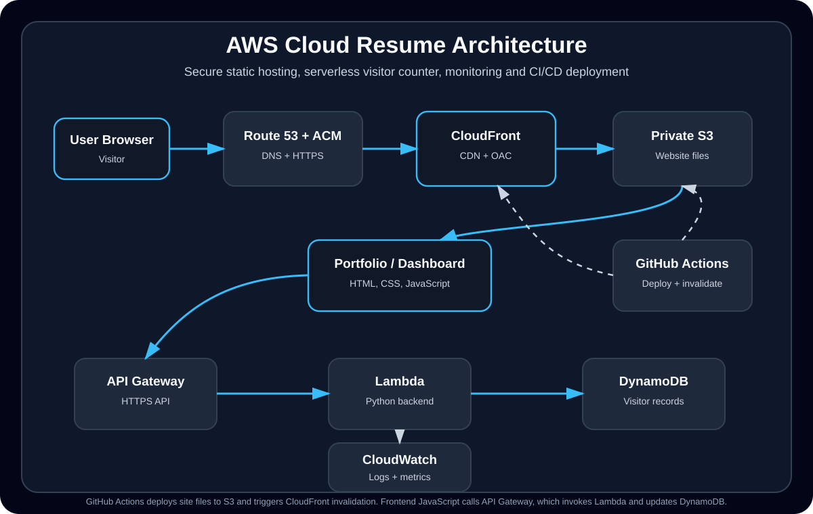

Cloud Resume + Live Operations Dashboard
A hands-on AWS project built as part of my Project Phoenix IT career switch. It demonstrates cloud engineering fundamentals across secure static hosting, serverless backend logic, database updates, DNS/SSL, monitoring, CI/CD automation, security hardening, AI-assisted learning and real troubleshooting.
Project Overview
This project started as a cloud resume website and grew into a small cloud operations environment: a public portfolio website, a dashboard subdomain, a serverless visitor counter, custom metrics, CloudWatch visibility and automated deployments.
What I built
- A live cloud portfolio hosted on AWS.
- A secure CloudFront distribution in front of a private S3 bucket.
- A serverless visitor counter using API Gateway, Lambda and DynamoDB.
- A live dashboard for total views and unique visitors.
- A GitHub Actions pipeline that deploys website changes and invalidates CloudFront.
Why I built it
I wanted a project that proved I could do more than follow theory. This project gave me hands-on practice with cloud hosting, permissions, APIs, monitoring, deployment automation, DNS, SSL and troubleshooting real errors across multiple AWS services.
Architecture
The main site is delivered through CloudFront and Route 53. CloudFront uses Origin Access Control to access a private S3 bucket. The dashboard and visitor counter use a serverless backend with API Gateway, Lambda and DynamoDB, with logs and metrics going into CloudWatch.

AWS Services and What They Do
S3
Stores the static website files, including HTML, CSS, JavaScript and assets.
CloudFront
Delivers the website through a CDN, handles HTTPS traffic and improves performance for visitors.
Origin Access Control
Keeps the S3 bucket private so users access content through CloudFront instead of directly through S3.
Route 53 + ACM
Connects the custom domains and subdomains to CloudFront and provides TLS/HTTPS certificates.
API Gateway
Provides the public HTTPS endpoint used by the website and dashboard to call the visitor counter backend.
Lambda
Runs the Python backend code that updates visitor counts and sends responses back to the frontend.
DynamoDB
Stores total view counts and unique visitor records using a simple serverless database design.
CloudWatch
Provides logs, custom metrics and dashboard visibility for troubleshooting and monitoring.
GitHub Actions
Deploys updates to S3 and creates CloudFront invalidations after changes are pushed to the main branch.
Security and Hardening Work
Private S3 + CloudFront OAC
- Moved toward a private S3 bucket design instead of exposing the bucket directly.
- Used CloudFront Origin Access Control so CloudFront can securely retrieve objects from S3.
- Worked with bucket policy conditions such as CloudFront distribution source ARN/account restrictions.
HTTPS, DNS and Certificates
- Configured custom domain routing through Route 53.
- Used ACM certificates for HTTPS on the main portfolio and dashboard subdomain.
- Troubleshot certificate, DNS and CloudFront distribution behaviour during deployment.
Credential Handling
- Used GitHub Actions Secrets for AWS access keys, AWS region, S3 bucket name and CloudFront distribution IDs.
- Avoided hardcoding credentials directly into project files or deployment scripts.
- Moved Git operations away from password-style authentication and used SSH-based Git access.
Browser Security Headers
- Worked through Content Security Policy restrictions affecting scripts, styles and API calls.
- Adjusted allowed connections when the dashboard needed to call the API endpoint.
- Reviewed security header behaviour including CSP, HSTS and Permissions-Policy style issues.
Monitoring, Metrics and Dashboard
Visitor Counter
The portfolio uses a serverless visitor counter. The frontend calls API Gateway, which invokes a Lambda function that updates DynamoDB and returns the current count.
Unique Visitor Tracking
The backend logic was expanded to track unique visitors using request data and a daily unique visitor key, allowing the dashboard to show both total page views and unique visitors for the day.
CloudWatch Logs
CloudWatch logs were used to inspect Lambda behaviour, debug backend failures and understand why API calls were returning unexpected responses.
CloudWatch Dashboard
A dashboard was created to display key metrics such as total views and daily unique visitors, using a custom CloudWatch namespace and site-specific dimensions.
CI/CD and Deployment Workflow
The site is deployed through GitHub Actions. When changes are pushed to the main branch, the workflow checks out the code, configures AWS credentials from GitHub Secrets, syncs static assets to S3, uploads HTML files with cache-control headers and creates CloudFront invalidations for both the main site and dashboard.
Deployment Automation
- Push to GitHub triggers deployment to AWS.
- Static assets are synced to S3.
- HTML files are uploaded with no-store cache headers to reduce stale browser content.
- CloudFront invalidations are created automatically after deployment.
DevOps Skills Practised
- Git version control and commit workflow.
- GitHub Actions YAML debugging.
- AWS CLI commands for S3 and CloudFront.
- Secret handling through GitHub repository secrets.
- CloudFront cache invalidation and deployment verification.
Troubleshooting Wins
The most valuable part of this project was not just building it — it was fixing the real problems that appeared while connecting multiple AWS services together.
S3 / CloudFront 403 Errors
Investigated access denied errors caused by missing files, bucket policy behaviour, private S3 access and CloudFront origin configuration.
Origin Access Control
Worked through the move from public-style S3 access toward a CloudFront-controlled private origin model.
Lambda / API Gateway 500 Errors
Used response testing and CloudWatch logs to understand backend failures and improve the visitor counter flow.
DynamoDB Reserved Keyword Issue
Fixed update expression problems by using expression attribute names when a field name conflicted with DynamoDB reserved keywords.
CSP and API Call Issues
Troubleshot browser-side Content Security Policy restrictions that blocked external scripts, styles or API calls.
GitHub Actions YAML Failure
Debugged deployment failures caused by YAML/shell formatting, including a broken S3 sync exclude line that produced a command not found error.
CloudFront Cache Behaviour
Used manual and automated invalidations to solve stale content issues after deployment updates.
Git Authentication Issues
Worked through GitHub authentication problems, including password/token limitations, and moved to SSH-based Git access for reliable pushing.
DNS and Certificate Issues
Troubleshot domain verification, Route 53 records, CloudFront aliases and ACM certificate behaviour across the main site and dashboard subdomain.
AI-Assisted Learning and Documentation
I used AI tools as a learning and troubleshooting assistant during this project, but I did not treat AI output as automatically correct. I used it to break down concepts, structure troubleshooting steps and improve documentation, then verified changes through AWS, GitHub Actions logs, CloudWatch logs, terminal commands and browser testing.
How AI Helped
- Explained relationships between CloudFront, S3, API Gateway, Lambda, DynamoDB, Route 53 and CloudWatch.
- Helped structure troubleshooting paths for issues such as 403 AccessDenied, API 500 errors, CSP restrictions and failed deployments.
- Helped turn technical fixes into clearer documentation for recruiters and interview discussions.
- Assisted with planning next improvements, such as a future AI Cloud Support Triage Assistant mini-project.
How I Verified the Work
- Tested live endpoints and pages in the browser and terminal.
- Checked GitHub Actions logs when deployments failed.
- Reviewed CloudWatch logs and metrics when debugging Lambda and API Gateway behaviour.
- Validated S3, CloudFront, Route 53, ACM and IAM-related settings directly in AWS.
Build Timeline
Built and deployed the static cloud resume website using S3, CloudFront, Route 53 and ACM.
Added a serverless visitor counter using API Gateway, Lambda and DynamoDB.
Created a dashboard subdomain and added visibility into total views and unique visitors.
Improved security with private S3 access through CloudFront Origin Access Control and stricter access policies.
Implemented GitHub Actions CI/CD with AWS deployment, secrets and CloudFront invalidations.
Polished the project for recruiter review with clearer documentation, troubleshooting notes and project details.
Skills Demonstrated
What I Learned
Cloud engineering is about connections
A small website can involve many connected systems: DNS, TLS, CDN, storage, API, compute, database, monitoring, identity, security policies and deployment automation.
Errors are useful signals
403, 500, CORS/CSP errors, stale cache behaviour and failed deployments all became learning opportunities to isolate the problem layer and verify each fix.
Security has to be designed in
Keeping S3 private, handling secrets correctly, using HTTPS, reviewing policies and avoiding hardcoded credentials are all part of building responsibly.
Documentation matters
Clear project documentation makes the work easier to review, troubleshoot, explain in interviews and improve over time.
Note: This project is actively being improved as part of my transition into cloud engineering.